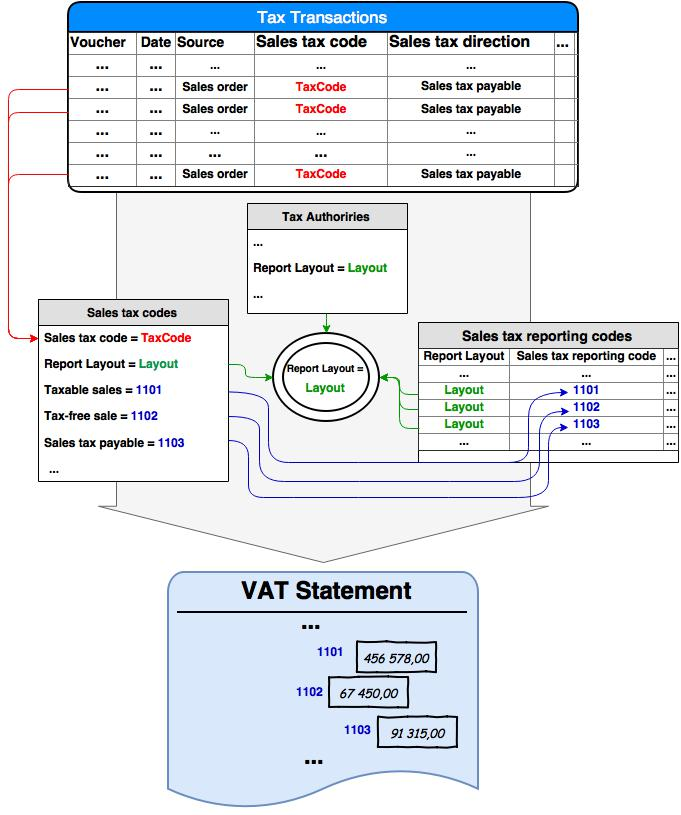

MwSt-Berichterstattung für Europa
Important
Dynamics 365 for Finance and Operations hat sich zu speziell entwickelten Anwendungen entwickelt, mit denen Sie bestimmte Geschäftsfunktionen verwalten können. Weitere Informationen zu diesen Änderungen finden Sie im Dynamics 365-Lizenzierungshandbuch.
Dieses Thema enthält allgemeine Informationen zum Einrichten und Generierung des Mehrwertsteuer-Auszugs für einige europäische Länder.
Dieses Thema bietet einen allgemeinen Ansatz zum Einrichten und zum Generieren der Mehrwertsteuererklärung. Dieser Ansatz ist für Benutzer in juristischen Personen in den folgenden Ländern/Regionen üblich:
- Österreich
- Belgien
- Tschechische Republik
- Estland
- Finnland
- Deutschland
- Lettland
- Litauen
- Niederlande
- Schweden
MwSt.-Auszugs, Überblick
Der MwSt-Auszug basiert auf dem Steuerbuchungsbeträgen. Die Generierung eines MwSt. -Auszugs ist Teil des Mehrwertsteuerzahlungsprozesses, der durch die Bank- und Beitragsmehrwertsteuerfunktion implementiert ist. Mithilfe dieses Funkltion können Sie die für eine Periode fällige Mehrwertsteuer berechnen. Die Ausgleichsberechnung enthält die gebuchte Mehrwertsteuer für den ausgewählten Abrechnungszeitraum für die Steuerbuchungen im Formular . Der Prozess zum Berechnen von Daten für einen MwSt.-Auszug basiert auf der Beziehung zwischen Mehrwertsteuercodes und Mehrwertsteuer-Erklärungscodes, in denen Mehrwertsteuer-Erklärungscodes mit den MwSt.-Auszugsfelder übereinstimmen (oder die Markierungen in XML). Für jeden Mehrwertsteuercode sollen Mehrwertsteuer-Erklärungscodes für jede Buchungsart, zum Beispiel steuerpflichtige Verkäufe, steuerpflichtige Einkäufe, steuerpflichtiger Import eingerichtet werden. Hiermit werden Buchungsarten im Feld Mehrwertsteuercodes für Mehrwertsteuer-Berichte im Abschnitt weiter unten in diesem Thema.
Für jeden Mehrwertsteuer-Erklärungscode soll ein bestimmtes Berichtslayout bestimmt werden. Gleichzeitig werden Mehrwertsteuercodes auf eine bestimmte Mehrwertsteuerbehörde von Mehrwertsteuer-Ausgleichsperioden verknüpft. Für jede Mehrwertsteuer-Behörde sollte ein bestimmtes Berichtslayout bestimmt werden. Auf diese Weise können nur mit Mehrwertsteuer-Erklärungscodes demselben Berichtslayout, das für die Mehrwertsteuerbehörde in Mehrwertsteuer-Abrechnungszeiträume für den Mehrwertsteuercode errichtet wird, in der Berichtseinstellung des Mehrwertsteuercodes ausgewählt werden. Eine Mehrwertsteuerbuchung, die nach dem Buchen eines Auftrags oder eine Erfassung erstellt wurde, enthält einen Mehrwertsteuercode, eine Mehrwertsteuerquelle, Mehrwertsteuerart und Buchungsbeträge (Steuergrundbetrag und Steuerbetrag in der Buchhaltungswährung, in der Mehrwertsteuerwährung und in der Buchungswährung). Durch die Kombination aus Steuerbuchungsattributen, verfassen Buchungsbeträge Gesamtbeträge für die Mehrwertsteuer-Erklärungscodes, die für Mehrwertsteuercodes angegeben werden. Die folgende Abbildung zeigt diese Datenbeziehung.

MwST-Bericht, Einrichtung
Um einen MwSt-Bericht zu zu Erstellen, müssen Sie Folgendes erstellen:
MwST-Behörde für MwST-Beichterstattung
Bevor Sie Mehrwertsteuer-Erklärungscodes einrichten können, müssen Sie das gewünschte Berichtslayout für die Mehrwertsteuerbehörde auswählen. Sie müssen auch das Feld Berichtslayout im Bereich Allgemein auf der Seite Mehrwertsteuer-Behörden auswählen. Dieses Layout wird verwendet, wenn Sie Mehrwertsteuer-Erklärungscodes einrichten.
Mehrwertsteuer-Erklärungscodes
Mehrwertsteuer-Erklärungscodes werden im Feldcodes MwSt. oder markierter Namen im XML-Format eingegeben. Diese Codes werden verwendet, um Beträge für den Bericht zu aggregieren und vorzubereiten. Wenn Sie das elektronische Berichterstellungsformat des MwSt.-Auszugs konfigurieren, werden die Namen der Ergebnisbeträge verwendet. Sie können auf der Seite "Mehrwertsteuer-Erklärungscodes" Mehrwertsteuer-Erklärungscodes erstellen und verwalten. Sie müssen jedem Code ein Berichtslayout zuweisen. Nachdem Sie die Mehrwertsteuer-Erklärungscodes erstellt haben, können Sie auf dem Inforegister Berichtseinstellungen auf der Seite Mehrwertsteuercode auf sie verweisen.
Mehrwertsteuercodes für MwSt-Berichterstattung
Grundbeträge und Steuerbeträge von Mehrwertsteuerbuchungen können auf Erklärungscodes im MwSt.-Bericht (XML-Markierungen oder Meldungsfelder) zusammengefasst werden. Sie können dieses einrichten, indem Sie Mehrwertsteuer-Erklärungscodes für verschiedene Buchungsarten für Mehrwertsteuercodes auf der Seite Mehrwertsteuercodes zuordnen. Die folgende Tabelle beschreibt die Buchungsarten im Bericht, der für Mehrwertsteuercodes eingerichtet ist. Die Berechnung umfasst Buchungen für alle Quellenarten außer Mehrwertsteuer.| Buchungstyp | Die Buchungsart sowie eine Beschreibung der Buchungsart auf dem Buchungstyp |
| Steuerpflichtiger Umsatz | Summe der Steuergrundlagebeträge der Steuerbuchungen, die die folgenden Anforderungen erfüllen:
|
| Steuerfreier Verkauf | Summe der Steuergrundlagebeträge der Steuerbuchungen, die die folgenden Anforderungen erfüllen:
|
| Mehrwertsteuer | Summe der Steuerbeträge der Steuerbuchungen, die die folgenden Anforderungen erfüllen:
|
| Steuerpflichtige Verkaufsgutschrift | Summe der Steuergrundlagebeträge der Steuerbuchungen, die die folgenden Anforderungen erfüllen:
|
| Steuerbefreite Verkaufsgutschrift | Summe der Steuergrundlagebeträge der Steuerbuchungen, die die folgenden Anforderungen erfüllen:
|
| Mehrwertsteuer auf Verkaufsgutschrift | Summe der Steuerbeträge der Steuerbuchungen, die die folgenden Anforderungen erfüllen:
|
| Steuerpflichtige Einkäufe | Summe der Steuergrundlagebeträge der Steuerbuchungen, die die folgenden Anforderungen erfüllen:
|
| Steuerfreier Einkauf | Summe der Steuergrundlagebeträge der Steuerbuchungen, die die folgenden Anforderungen erfüllen:
|
| Vorsteuer | Summe der Steuerbeträge der Steuerbuchungen, die die folgenden Anforderungen erfüllen:
|
| Steuerpflichtige Einkaufsgutschrift | Summe der Steuergrundlagebeträge der Steuerbuchungen, die die folgenden Anforderungen erfüllen:
|
| Steuerbefreite Einkaufsgutschrift | Summe der Steuergrundlagebeträge der Steuerbuchungen, die die folgenden Anforderungen erfüllen:
|
| Mehrwertsteuer auf Einkaufsgutschrift | Summe der Steuerbeträge der Steuerbuchungen, die die folgenden Anforderungen erfüllen:
|
| Steuerpflichtiger Import | Summe der Steuergrundlagebeträge der Steuerbuchungen, die die folgenden Anforderungen erfüllen:
|
| Gegenkonto zum steuerpflichtigen Import | Summe der Steuergrundlagebeträge der Steuerbuchungen, die die folgenden Anforderungen erfüllen:
|
| Steuerpflichtige Importgutschrift | Summe der Steuergrundlagebeträge der Steuerbuchungen, die die folgenden Anforderungen erfüllen:
|
| Gegenkonto zur steuerpflichtigen Import-Gutschrift | Summe der Steuergrundlagebeträge der Steuerbuchungen, die die folgenden Anforderungen erfüllen:
|
| Verbrauchssteuer | Summe der Steuerbeträge der Steuerbuchungen, die die folgenden Anforderungen erfüllen:
|
| Gegenkonto Verbrauchssteuer | Summe der Steuerbeträge der Steuerbuchungen, die die folgenden Anforderungen erfüllen:
|
Note
Für die Tabelle oben wird angenommen, dass die folgenden Kriterien erfüllt sein:
- Der Steuergrundbetrag ist ein Transaktionsbetrag aus dem Feld Ursprung in der Buchungswährung.
- Der Steuerbetrag ist ein Transaktionsbetrag aus dem Feld Aktueller Mehrwertsteuerbetrag in der Buchungswährung.
Konfigurieren Sie das ER-Modell und -Format für den Bericht
Sie können Elektronische Berichterstattung (ER) verwenden, um Auszüge und Berichte zu konfigurieren und verschiedene elektronische Datenformate zu exportieren, ohne den X++-Code zu ändern. Zusätzliche Informationen:
- Überblick über die elektronische Berichterstellung
- Elektronische Berichterstellungskonfigurationen von Lifecycle Services herunterladen
- Lokalisierungsanforderungen - Erstellen Sie eine GER-Konfiguration
Länderspezifische Ressourcen für Mehrwertsteuer-Auszüge
Der Mehrwertsteuertyp für jedes Land muss den Bedingungen der Gesetzgeber des Lands erfüllen. Es gibt vordefinierte allgemeine Modelle und Formate der MwSt.-Auszüge für die Länder, die in der weiter unten dargestellten Tabelle aufgeführt sind.
| Land | Weitere Informationen |
|---|---|
| Österreich | MwSt-Berichtdetails für Österreich |
| Belgien | |
| Tschechische Republik | MwSt.-Abrechnung für die Tschechische Republik (This is an external link) |
| Estland | MwSt-Berichtadetails für Estland (This is an external link) |
| Finnland | Mehrwertsteuererklärung für Finnland (This is an external link) |
| Deutschland | Umsatzsteuererklärung für Deutschland |
| Italien | MwSt-Abrechnungsdetails für Italien (This is an external link) |
| Lettland | MwSt-Berichtdetail für Lettland (This is an external link) |
| Litauen | MwSt-Berichtdetail für Litauen (This is an external link) |
| Niederlande | Mehrwertsteuererklärung für die Niederlande (This is an external link) |
| Schweden | Mehrwertsteuererklärung für Schweden (This is an external link) |